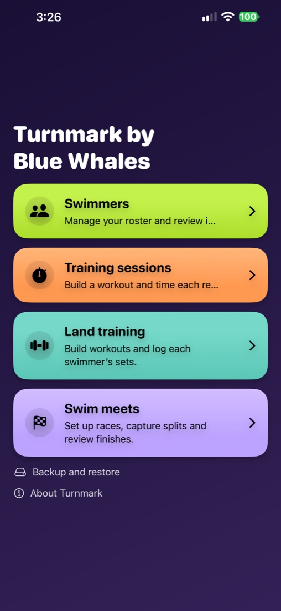

Pool practice
Build sets, assign lanes, and tap each swimmer at the wall. A recovery clock keeps the next effort in view.
iPhone & iPad · Works offline
Plan a workout, catch each swimmer’s split, and bring the results back to your next session. Turnmark keeps your coaching log on the device you carry to the pool.
Get started with Turnmark
Build sets, assign lanes, and tap each swimmer at the wall. A recovery clock keeps the next effort in view.
Move heats into the order they’re called. Time races in 25 m or 50 m pools and reopen a completed heat to review the splits.
Build cardio, core, and strength workouts. Record the sets and reps each swimmer completes.
Compare times for the same event and pool length, then share an individual PDF with a coach or family.